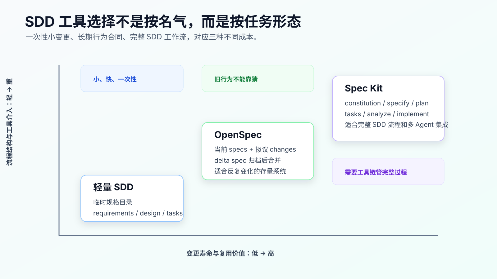
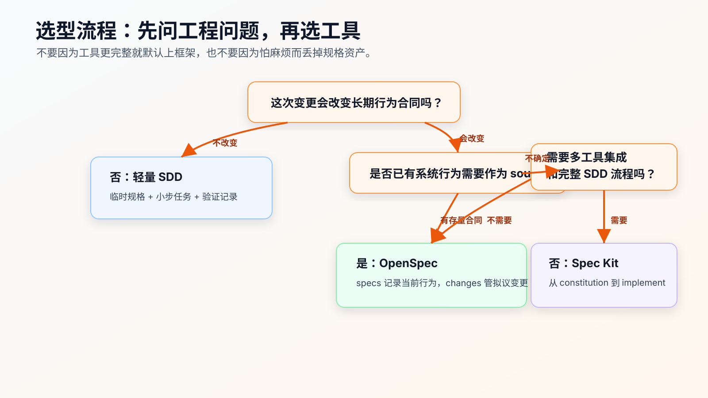

OpenSpec、Spec Kit 与轻量 SDD 怎么选
程序员做 AI Coding，很容易在 SDD 这里走偏。
一种偏法是完全不用规格。所有需求都写进聊天窗口，要求 AI “理解代码后实现”。这在小改动里能跑通，在复杂需求里很快失控：旧行为说不清，技术边界说不清，测试意图说不清，最后只剩一个很大的 diff。
另一种偏法是看到框架就上框架。一个字段展示改动，也要搞完整 spec、plan、tasks、workflow。流程看起来正规，实际成本比收益高。
不要先问“哪个工具更强”，先看任务形态：
- 这次变更是不是一次性的。
- 它会不会改变长期行为合同。
- 是否已有系统行为需要作为 source of truth。
- 是否需要工具帮你生成、校验、串联完整 SDD artifact。
- 后续 AI 是否会反复接手同一领域。
结论先说：
小而明确、一次性的复杂任务，用轻量 SDD。
存量系统里反复变化的业务领域，用 OpenSpec。
偏 0 到 1、希望用工具链驱动完整 Spec -> Plan -> Tasks -> Implement 流程，或者需要多 Agent 集成，用 Spec Kit。
不要把三者理解成低级、中级、高级。它们解决的是不同问题。

先把三者的边界说清楚
轻量 SDD 是一种 repo-local 写法，不是一个官方框架。
它通常就是在项目里放一个临时规格目录：
.ai/tasks/paid-order-cancel-refund/
├── requirements.md
├── design.md
├── tasks.md
└── verification.md
它的优势是启动成本低。你不需要安装工具，不需要改项目模板，不需要学习新命令。只要把需求、设计、任务和验证写到固定位置，就能让 Agent 读到稳定上下文。
它的弱点也明显：完成后这些文件是否归档、是否成为长期系统合同、下一次 AI 是否会优先读取，全靠你自己的工作习惯。
OpenSpec 是变更管理层。
官方文档当前把 openspec/specs/ 定义为系统当前行为，把 openspec/changes/ 定义为拟议变更。每个 change 里有 proposal.md、design.md、tasks.md 和 delta specs。归档时，delta spec 里的 ADDED、MODIFIED、REMOVED 会合并回主 specs/。
它的优势是把“当前事实”和“拟议变更”分开。对存量系统很重要。
它的弱点是需要你维护主 specs。如果主 specs 过期，Agent 会被一个看起来权威但实际错误的上下文带偏。
Spec Kit 是完整 SDD 工具链。
GitHub Spec Kit 官方文档当前描述的核心流程是 Spec -> Plan -> Tasks -> Implement。quick start 里还推荐在有歧义的生产功能中加入 /speckit.clarify、/speckit.checklist、/speckit.analyze，并提供多种 AI coding agent integration、extensions、presets、workflows 等能力。
它的优势是流程完整、集成面广、模板和命令体系清楚，适合从需求到实现的结构化推进。
它的弱点是对小任务会显得重，而且常被误用成“把完整流程跑一遍就等于质量更高”。真正的质量仍然来自规格质量、代码审查和验证证据。
用一张决策图先分流

实际工作里，我会先问第一个问题：
这次变更会改变长期行为合同吗？
不会，就用轻量 SDD。
例如：
- 给已有 API 增加一个日志字段。
- 修一个明确的空指针。
- 修改页面加载状态文案。
- 给已存在行为补一组回归测试。
这些任务需要上下文和验证，但不一定需要长期规格资产。你只要写清：
需求是什么
不改什么
涉及哪些文件
怎么验证
失败后怎么停
就够了。
第二个问题：
是否已有系统行为需要作为 source of truth？
有，就优先考虑 OpenSpec。
例如订单、支付、权限、库存、风控、结算、消息投递。这些领域里，AI 最容易犯的错不是语法，而是重新解释业务规则。OpenSpec 的 specs/ 可以让它先读取当前行为，再处理 changes/ 里的拟议变更。
第三个问题：
是否需要工具链帮你管理完整 SDD 流程和 Agent 集成？
需要，就考虑 Spec Kit。
例如你在做一个新功能包、新服务、新工具，想让工具生成规格、计划、任务，并且希望不同 AI coding agent 都能进入同一套流程。Spec Kit 的 integration、command、template、preset 更适合这类场景。
轻量 SDD：最适合个人高频使用
轻量 SDD 的最大价值，是让你不再把复杂需求交给一次聊天。
它适合这些任务：
- 需求不大，但有业务边界。
- 改动不需要长期归档成系统 spec。
- 你希望快速把 Agent 限制在小 diff 里。
- 项目不方便引入额外工具。
- 你还在摸索一个团队或个人的写法，不想过早绑定框架。
一个比较稳的目录是：
.ai/tasks/<task-name>/
├── requirements.md
├── design.md
├── tasks.md
└── verification.md
requirements.md 写行为：
# Requirements: paid order cancellation
## Current Behavior
- Pending orders can be canceled directly.
- Shipped orders reject cancellation.
- Paid orders currently become canceled directly.
## Target Behavior
- Paid orders become refund_requested.
- Exactly one refund request is created.
- Duplicate cancellation does not create duplicate refund requests.
- Refund creation failure leaves the order paid.
## Out of Scope
- Payment provider callback behavior.
- Public API response shape.
- Database schema migration.
design.md 写技术边界：
# Design
## Ownership
- `OrderCancelService` orchestrates cancellation.
- `OrderStatusTransition` owns allowed transitions.
- `RefundRequestService` owns refund request creation.
## Compatibility
- Keep API response shape unchanged.
- Do not change payment provider callback.
- No database migration in this change.
## Failure Handling
- Persist refund_requested only after refund request creation succeeds.
tasks.md 写小步 diff：
# Tasks
## Task 1: Add focused tests
Files:
- `test/order/cancel.test.ts`
Verify:
- `npm test -- order-cancel`
Stop if:
- existing pending or shipped behavior fails before implementation.
## Task 2: Add status transition
Files:
- `src/order/status-transition.ts`
Verify:
- `npm test -- order-cancel`
Stop if:
- public API response shape must change.
verification.md 记录证据：
# Verification
## Commands
```bash
npm test -- order-cancel
npm test -- order
```
## Results
- `npm test -- order-cancel`: pass
- `npm test -- order`: pass
## Residual Risk
- Payment provider callback was out of scope.
注意，这里没有为了“显得工程化”新建一个样板项目。它直接服务真实变更。
轻量 SDD 的风险也要看清：
- 没有工具强制你归档。
- 没有 delta spec 合并语义。
- 没有跨 Agent 的命令集成。
- 文档结构全靠项目规则维护。
所以它适合个人高频工作流，不适合承担长期行为合同。
OpenSpec：适合存量系统的行为变更
OpenSpec 的强项，是处理已有系统的变更。
官方 concepts 文档强调它是 brownfield-first，delta-based 的方式让你能指定对现有行为的修改，而不是只描述新系统。这一点对 AI Coding 很关键。
很多真实需求不是“做一个新能力”，而是：
- 旧逻辑 A 保持不变。
- 旧逻辑 B 改成 B2。
- 旧逻辑 C 删除。
- 新逻辑 D 加进来。
如果这些都写在一个 prompt 里，Agent 很容易把 A 也顺手改了。
OpenSpec 的目录给了明确边界：
openspec/
├── specs/
│ └── order/spec.md
└── changes/
└── paid-order-cancel-refund/
├── proposal.md
├── design.md
├── tasks.md
└── specs/order/spec.md
主 specs/order/spec.md 写当前行为：
### Requirement: Pending order cancellation
The system SHALL allow pending orders to be canceled.
### Requirement: Shipped order cancellation
The system SHALL reject cancellation for shipped orders.
change 里的 delta spec 写变化：
## MODIFIED Requirements
### Requirement: Paid order cancellation
The system SHALL move paid orders to refund_requested when a user cancels them.
这个结构比轻量 SDD 多了一层语义：当前系统事实和当前变更不是同一个东西。
OpenSpec 适合这些情况：
- 同一领域会连续多次变更。
- 你希望 AI 每次先读取当前行为。
- 需求有增、改、删语义。
- 变更完成后需要归档成新的系统事实。
- 需要保留 change 历史，方便后续追溯。
OpenSpec 不适合这些情况：
- 项目还没有形成稳定业务领域。
- 只有一次性小改动。
- 没人维护
openspec/specs/。 - 团队会把 spec 当成形式文档，代码变了 spec 不更新。
最后这一点最重要。OpenSpec 不是自动真理机。它只是给规格资产一个结构。主 specs 是否可靠，仍然取决于你是否在变更后同步和归档。
Spec Kit：适合完整 SDD 流程和工具集成
Spec Kit 更像一个完整的 SDD 工作台。
从官方 quick start 看，它不是只提供一个模板目录，而是通过 Specify CLI 初始化项目，并给 AI coding agent 提供命令。核心命令包括：
/speckit.constitution
/speckit.specify
/speckit.plan
/speckit.tasks
/speckit.implement
生产功能里，官方 quick start 还建议把这些质量动作纳入常规流程：
/speckit.clarify
/speckit.checklist
/speckit.analyze
这几个命令背后的工程意图很好理解：
constitution 写项目原则和长期约束。
specify 写要做什么和为什么做，尽量不在这个阶段陷入技术栈。
clarify 处理规格里的歧义。
checklist 检查需求质量。
plan 进入技术方案。
tasks 拆任务。
analyze 检查 spec、plan、tasks 之间的一致性。
implement 执行。
Spec Kit 适合这些情况：
- 你要从 0 到 1 做一个较完整功能或工具。
- 你希望工具直接生成 SDD 目录、脚本和命令。
- 你希望同一个 SDD 流程能被不同 Agent 使用。
- 你需要模板、preset、extension 去适配团队或个人规范。
- 你愿意接受更完整的流程成本，换取更强的结构化。
Spec Kit 不适合这些情况：
- 只是修一个局部 bug。
- 当前项目不想引入新的 CLI 和模板。
- 你还没有能力审它生成的 spec、plan、tasks。
- 你把
/speckit.implement当成“自动写完并保证正确”的按钮。
最后一条尤其要警惕。Spec Kit 能让上下文更结构化，但不能替代工程判断。analyze 能检查 artifact 之间的一致性，不等于业务一定正确；implement 能驱动实现，不等于不用做代码审查和测试。
三者怎么映射到真实工作
同一个需求，在三种路线下会长得很不一样。
需求：
已支付订单取消后，不再直接 canceled，而是进入 refund_requested，并创建一次退款请求。
如果用轻量 SDD，你会创建：
.ai/tasks/paid-order-cancel-refund/
├── requirements.md
├── design.md
├── tasks.md
└── verification.md
然后让 Agent 逐个 task 做。
如果用 OpenSpec，你会先确认当前 specs：
openspec/specs/order/spec.md
然后开 change：
openspec/changes/paid-order-cancel-refund/
├── proposal.md
├── design.md
├── tasks.md
└── specs/order/spec.md
实现完成后 archive，把 delta spec 合并回主 specs。
如果用 Spec Kit，你会围绕命令流程推进：
/speckit.constitution
/speckit.specify
/speckit.clarify
/speckit.checklist
/speckit.plan
/speckit.tasks
/speckit.analyze
/speckit.implement
然后在每个阶段审 artifact。
这三种方式都可以做同一个需求，但它们解决的主问题不同：
轻量 SDD：约束一次任务
OpenSpec：维护存量行为变更
Spec Kit：驱动完整 SDD 生命周期
如果你只记住这三句话，选型基本不会偏得太远。
一个更实用的选择表
| 场景 | 推荐 | 原因 |
|---|---|---|
| 修复明确 bug，影响范围小 | 轻量 SDD | 写清复现、边界和验证即可 |
| 中等复杂需求，但不会长期维护规格 | 轻量 SDD | 成本低，能控制小 diff |
| 订单、权限、支付、库存等存量行为变化 | OpenSpec | 需要当前行为和拟议变更分离 |
| 同一领域会反复被 AI 接手 | OpenSpec | 主 specs 能成为长期上下文入口 |
| 新项目、新工具、新功能包 | Spec Kit | 完整流程更有价值 |
| 需要多 AI coding agent 使用同一套流程 | Spec Kit | integration 和命令体系更强 |
| 需要自定义模板、preset、extension | Spec Kit | 工具内建扩展机制 |
| 团队暂时没人维护规格资产 | 轻量 SDD | 先不要引入长期 spec 负债 |
| 只改文案、样式或小配置 | 不必 SDD | 直接改，但保留验证证据 |
这个表不是死规则。真实项目里可以组合使用。
例如，一个 repo 可以用 OpenSpec 维护订单、支付这些高风险领域，同时普通 UI 改动仍然用轻量 SDD。另一个新工具项目可以用 Spec Kit 初始化完整流程，再把其中的 project principles 和 task 拆分习惯迁移到自己的轻量 SDD 模板里。
工具之间不是互斥关系，真正要避免的是把它们混成一锅。
不要把 Spec Kit 和 OpenSpec 写进同一个任务上下文
很多人会想：“既然都好，那我把 Spec Kit、OpenSpec、自己手写的 requirements 都给 AI，看它综合一下。”
这通常会污染上下文。
因为三者对 artifact 的语义不同：
- 轻量 SDD 的
requirements.md是一次任务合同。 - OpenSpec 的
specs/是当前系统行为，changes/是拟议变更。 - Spec Kit 的 spec/plan/tasks 是一个工具链阶段产物。
如果你同时给 Agent 三套结构，它可能分不清哪个是 source of truth。
一次任务只选一条主线。
用轻量 SDD，就明确：
本次任务以 `.ai/tasks/<task>/` 为准。
不要读取其他草稿目录。
用 OpenSpec，就明确：
先读取 `openspec/specs/<domain>/spec.md`。
再读取 `openspec/changes/<change>/` 下的 proposal、delta spec、design、tasks。
当前授权只执行 tasks.md 中指定 task。
用 Spec Kit，就明确：
按当前 feature 的 Spec Kit artifact 推进。
先运行 analyze 或人工检查 spec/plan/tasks 一致性，再实现。
主线清楚，Agent 才不容易把旧草稿、旧设计和当前任务混在一起。
选型时最容易犯的五个错
错误一：把轻量 SDD 当成低配方案。
轻量不等于粗糙。对个人高频任务，它反而是最实用的起点。只要 requirements、design、tasks、verification 写得扎实，它能解决大多数复杂但一次性的变更。
错误二：OpenSpec 只写 changes，不维护 specs。
这会失去 OpenSpec 最核心的价值。没有当前系统行为，delta spec 就没有参照。
错误三：Spec Kit 跑完命令就直接相信结果。
Spec Kit 生成 artifact 后仍然要审。尤其是 clarify 是否真的消除了歧义，plan 是否符合现有代码，tasks 是否能小步验证。
错误四：把框架能力当成项目能力。
工具支持 integration、extension、preset，不代表你的 repo 已经适合它。项目规则、测试命令、模块边界、CI 反馈这些基础能力如果缺失，框架只能让问题更结构化地暴露出来。
错误五：为了显得专业，把小任务流程复杂化。
如果一个改动 30 分钟能完成，验证也清楚，不需要把它扩成完整 SDD 流程。AI Coding 要服务交付，不是让每个任务都变成仪式。
给个人程序员的落地顺序
如果你现在没有任何 SDD 习惯，不建议一上来装一堆框架。
先从轻量 SDD 开始。
给自己的 repo 固定一个目录：
.ai/tasks/
每次复杂任务都写四个文件：
requirements.md
design.md
tasks.md
verification.md
连续做 5 个真实任务后，再回看：
- 哪些需求反复出现在同一领域。
- 哪些旧行为总需要重复解释。
- 哪些变更完成后应该沉淀成长期合同。
如果答案集中在某几个业务领域，再引入 OpenSpec。
先只覆盖一个领域，例如：
openspec/specs/order/spec.md
不要一次补全整个系统。一次补 3 到 5 条高风险行为，然后用一个真实 change 走完整流程。
如果你开始做新工具、新产品模块，或者需要让不同 Agent 共享一套 SDD 命令，再评估 Spec Kit。
安装前先做三件事：
uv --version
git status --short
specify --help
如果使用 one-shot：
uvx --from git+https://github.com/github/spec-kit.git specify init .
如果使用持久安装，先看官方安装文档和当前 release。不要把网上旧教程里的命令直接复制到生产 repo。
真正的选择标准：谁来维护 source of truth
所有 SDD 工具最后都会回到一个问题：
这次任务完成后，谁负责维护事实？
轻量 SDD 的事实，通常停留在任务目录和 verification 里。它适合短生命周期。
OpenSpec 的事实，应该沉淀到 openspec/specs/。它适合长期行为合同。
Spec Kit 的事实，分布在它生成的 spec、plan、tasks、constitution 和扩展模板里。它适合完整流程，但也更需要你理解每个 artifact 的职责。
如果没人维护事实，工具越完整，过期信息越多。
AI Coding 最怕的不是没有文档，而是有一堆过期但看起来很正式的文档。
所以选型时不要只问“哪个框架能力最多”，要问：
- 这个 repo 是否有稳定的当前行为规格。
- 我是否愿意在代码变更后更新规格。
- Agent 下次会不会优先读取这些规格。
- 测试和验证能否证明规格没有漂移。
这些问题答不上来，先用轻量 SDD。
这些问题答得上来，再引入 OpenSpec 或 Spec Kit。
常见问题
轻量 SDD 能不能和 OpenSpec 共存？
可以，但同一次任务最好只选一条主线。OpenSpec 覆盖高风险长期领域，轻量 SDD 处理普通一次性任务，是比较实际的组合。
Spec Kit 和 OpenSpec 谁更适合程序员？
看任务。存量系统行为变更更偏 OpenSpec；完整 SDD 流程、新项目、多 Agent 集成更偏 Spec Kit。专业不等于选更重的工具，而是能控制成本和风险。
已经用了 Spec Kit，还需要 AGENTS.md 吗？
需要。Spec Kit 能生成和组织流程，但项目长期规则、验证命令、禁止事项、代码风格仍然需要在 Agent 能稳定读取的位置维护。具体位置以你使用的 agent integration 为准。
OpenSpec 能不能替代测试？
不能。OpenSpec 维护行为规格，测试提供可执行证据。没有测试，Agent 仍然可能实现出“看起来符合 spec”的错误代码。
什么时候不要上任何 SDD？
很小、风险低、验证明确的改动可以直接做。例如修 typo、改配置默认值、调整非核心样式。但也要保留最基本的 diff 审查和验证记录。
可复查资料
- GitHub Spec Kit 官方文档：https://github.github.io/spec-kit/
- GitHub Spec Kit quick start：https://github.github.io/spec-kit/quickstart.html
- GitHub Spec Kit integrations：https://github.github.io/spec-kit/reference/integrations.html
- GitHub Spec Kit CLI reference：https://github.github.io/spec-kit/reference/overview.html
- OpenSpec getting started：https://github.com/Fission-AI/OpenSpec/blob/main/docs/getting-started.md
- OpenSpec concepts：https://github.com/Fission-AI/OpenSpec/blob/main/docs/concepts.md